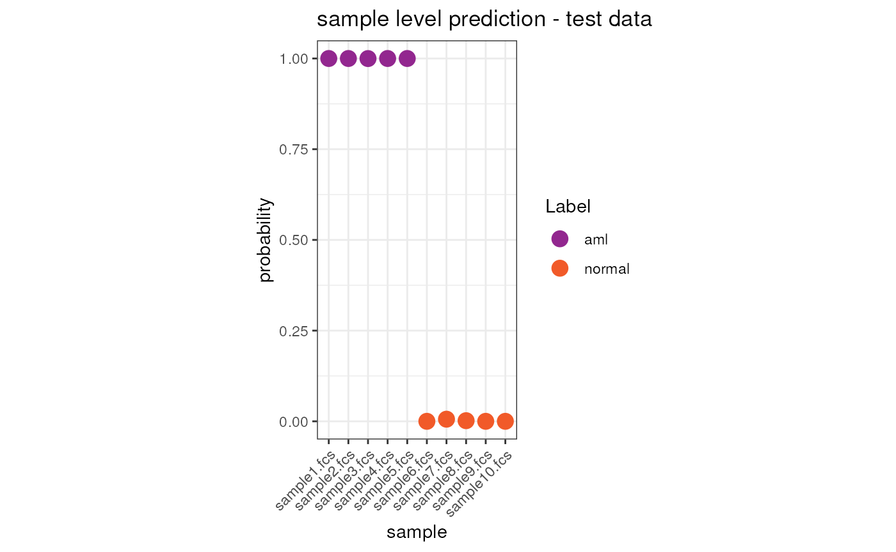

Machine learning classifier
Source:vignettes/Machine_learning_classifier.Rmd
Machine_learning_classifier.RmdWith cyCONDOR we developed a set of functions allowing
the user to easily train a classifier for the sample labels. In this
vignette we exemplify all the steps required for the classification of
AML (acute myeloid leukemia) and control samples. The trained model can
then be used to predict the label of and external sample. This workflow
is based on the CytoDX package, for detailed documentation
see the original manuscript Hu
et. al, 2019, Bioinformatics and cytoDXdocumentation of
Bioconductor.
We will start the vignette by loading a training dataset, in this
dataset the clinical classification of the sample is known and will be
used to train a cytoDX model. In cyCONDOR the
cytoDX model is saved withing the condor
object and can be used to classify new samples.
If you use this workflow in your work please consider citing cyCONDOR and cytoDX.
Train the cytoDX model
Load the data
We start by importing the training dataset, this is done as
previously described with the prep_fcd function, in this
case the anno_table also include the clinical
classification of the samples (aml or
normal).
condor <- prep_fcd(data_path = "../../../Figure 7 - Clinical Classifier/data_and_envs/CytoDX/train/",
max_cell = 10000000,
useCSV = FALSE,
transformation = "auto_logi",
remove_param = c("FSC-A","FSC-W","FSC-H","Time"),
anno_table = "../../../Figure 7 - Clinical Classifier/data_and_envs/CytoDX/fcs_info_train.csv",
filename_col = "fcsName",
seed = 91)Build the classifier model
We now train the cytoDX classifier on the sample label,
this step does not require any other pre-analysis on the dataset,
nevertheless, if you are not familiar with the data you are using for
training we recommend an exploratory data analysis first.
# Re order variables - this is not strictly needed but the classification always consider the first variable as reference.
condor$anno$cell_anno$Label <- factor(condor$anno$cell_anno$Label,
levels = c("normal", "aml"),
labels = c("1_normal", "2_aml"))The train_classifier_model requires the user to define
the input table and few parameter to be used for training the
cytoDX model. As some of the variables are derived from the
cytoDX package (cytoDX.fit function) please
refer to cytoDX documentation for further details.
- fcd: Flow cytometry data set to be used for training the model.
- input_type: data slot to be used for the classification, suggested
expr. - data slot: exact name of the data slot to be used (
origornorm, if batch correction was performed). - sample_names: name of the column of the
anno_tablecontaining the sample names. - classification_variable: name of the column of the
anno_tablecontaining the clinical classification to be used for training the classifier. - type1: type of first level prediction, parameter inherited from
cytoDX, seecytoDXdocumentation for details. - type2: type of second level prediction, parameter inherited from
cytoDX, seecytoDXdocumentation for details. - parallelCore: number of cores to be used.
condor <- train_classifier_model(fcd = condor,
input_type = "expr",
data_slot = "orig",
sample_names = "expfcs_filename",
classification_variable = condor$anno$cell_anno$Label,
family = "binomial",
type1 = "response",
parallelCore = 1,
reg = FALSE,
seed = 91)## Warning in lognet(xd, is.sparse, ix, jx, y, weights, offset, alpha, nobs, : one
## multinomial or binomial class has fewer than 8 observations; dangerous groundExplore the result of model training
We can now explore the results of the cell level and sample level
prediction on the training data. The results are stored together with
the cytoDX model itself in the extras slot
(classifier_model)
Cell level predition result on the training dataset
The cellular level result contain the probability of classification
to aml for each cell in the dataset, this table also
include the true label of each cell.
head(condor$extras$classifier_model$train.Data.cell)## sample y1.Truth y.Pred.s0
## 1 sample11.fcs 2_aml 0.5836773
## 2 sample11.fcs 2_aml 0.5299637
## 3 sample11.fcs 2_aml 0.6896542
## 4 sample11.fcs 2_aml 0.4914881
## 5 sample11.fcs 2_aml 0.5393115
## 6 sample11.fcs 2_aml 0.3407959Sample level predition result on the training dataset
The sample level result contain the probability of classification to
aml for each cell in the dataset, this table also include
the true label of each cell.
head(condor$extras$classifier_model$train.Data.sample)## sample y1.Truth y.Pred.s0
## sample11.fcs sample11.fcs 2_aml 1.000000e+00
## sample12.fcs sample12.fcs 2_aml 1.000000e+00
## sample13.fcs sample13.fcs 2_aml 9.999999e-01
## sample14.fcs sample14.fcs 2_aml 1.000000e+00
## sample15.fcs sample15.fcs 2_aml 1.000000e+00
## sample16.fcs sample16.fcs 1_normal 5.949578e-14Visualize the results on the train dataset
We can now visualize the prediction result both at cell and sample level.
anno <- read.csv("../../../Figure 7 - Clinical Classifier/data_and_envs/CytoDX/fcs_info_train.csv")
ggplot(merge(x = condor$extras$classifier_model$train.Data.cell, y = anno, by.x = "sample", by.y = "fcsName"), aes(x = sample, y = y.Pred.s0, color = Label)) +
geom_jitter() +
geom_violin() +
scale_color_manual(values = c("#92278F", "#F15A29")) +
theme_bw() +
theme(aspect.ratio = 1) +
ylab("probability") +
ggtitle("sample level prediction - train data") +
theme(axis.text.x = element_text(angle = 45, hjust = 1))
ggplot(merge(x = condor$extras$classifier_model$train.Data.sample, y = anno, by.x = "sample", by.y = "fcsName"), aes(x = sample, y = y.Pred.s0, color = Label)) +
geom_point(size = 4) +
scale_color_manual(values = c("#92278F", "#F15A29")) +
theme_bw() +
theme(aspect.ratio = 2) +
ylab("probability") +
ggtitle("sample level prediction - train data") +
theme(axis.text.x = element_text(angle = 45, hjust = 1))Visualization of the decision tree
We can use a cytoDX built-in function to visualize the
decision tree used for the cell level classification. See
cytoDX documentation for further details.
tree <- treeGate(P = condor$extras$classifier_model$train.Data.cell$y.Pred.s0,
x= condor$expr$orig)Testing on an independent dataset
Load the data
To now validate the performance of the trained cytoDX
model we will test it on a test dataset with no overlap with the
training data.
condor_test <- prep_fcd(data_path = "../../../Figure 7 - Clinical Classifier/data_and_envs/CytoDX/test/",
max_cell = 10000000,
useCSV = FALSE,
transformation = "auto_logi",
remove_param = c("FSC-A","FSC-W","FSC-H","Time"),
anno_table = "../../../Figure 7 - Clinical Classifier/data_and_envs/CytoDX/fcs_info_test.csv",
filename_col = "fcsName",
seed = 91)Predict classification
We can now predict the label using the trained model
# Re order variables - this is not strictly needed but the classification always consider the first variable as reference.
condor_test$anno$cell_anno$Label <- factor(condor_test$anno$cell_anno$Label,
levels = c("normal", "aml"),
labels = c("1_normal", "2_aml"))The predict_classifier requires few user defined input
to predict the labels of an external dataset using a previously prepared
cytoDX model.
- fcd: flow cytometri dataset of the new data
- input_type: data slot to be used for the classification, suggested
expr. Should match the option selection intrain_classifier_model. - data slot: exact name of the data slot to be used (
origornorm, if batch correction was performed). Should match the option selection intrain_classifier_model. - sample_names: name of the column in the
anno_tablecontaining the sample names. - model_object:
cyCONDORtrainedcytoDXmodel, this is stored in thecondorobject used to train the model (extrasslot).
condor_test <- predict_classifier(fcd = condor_test,
input_type = "expr",
data_slot = "orig",
sample_names = "expfcs_filename",
model_object = condor$extras$classifier_model,
seed = 91)Explore the result of prediction in test dataset
We can now explore the results of the cell level and sample level
prediction on the test data. The results are stored together with the
cytoDX model itself in the extras slot
(classifier_prediction)
Cell level predition result on the test dataset
The cellular level result contain the probability of classification
to aml for each cell in the dataset.
head(condor_test$extras$classifier_prediction$xNew.Pred.cell)## sample y.Pred.s0
## 1 sample1.fcs 0.6212374
## 2 sample1.fcs 0.6780328
## 3 sample1.fcs 0.5818562
## 4 sample1.fcs 0.3354043
## 5 sample1.fcs 0.4015879
## 6 sample1.fcs 0.7143018Cell level predition result on the test dataset
The sample level result contain the probability of classification to
aml for each cell in the dataset.
head(condor_test$extras$classifier_prediction$xNew.Pred.sample)## sample y.Pred.s0
## sample1.fcs sample1.fcs 1.000000e+00
## sample10.fcs sample10.fcs 6.021657e-12
## sample2.fcs sample2.fcs 1.000000e+00
## sample3.fcs sample3.fcs 9.998114e-01
## sample4.fcs sample4.fcs 1.000000e+00
## sample5.fcs sample5.fcs 1.000000e+00Visualize the results on the test dataset
We can now visualize the prediction result both at cell and sample level.
anno <- read.csv("../../../Figure 7 - Clinical Classifier/data_and_envs/CytoDX/fcs_info_test.csv")
tmp <- merge(x = condor_test$extras$classifier_prediction$xNew.Pred.cell, y = anno, by.x = "sample", by.y = "fcsName")
tmp$sample <- factor(tmp$sample, levels = c("sample1.fcs", "sample2.fcs", "sample3.fcs", "sample4.fcs", "sample5.fcs", "sample6.fcs", "sample7.fcs", "sample8.fcs", "sample9.fcs", "sample10.fcs"))
ggplot(tmp, aes(x = sample, y = y.Pred.s0, color = Label)) +
geom_jitter() +
geom_violin() +
scale_color_manual(values = c("#92278F", "#F15A29")) +
theme_bw() +
theme(aspect.ratio = 1) +
ylab("probability") +
ggtitle("cell level prediction - test data") +
theme(axis.text.x = element_text(angle = 45, hjust = 1))
rm(tmp)
tmp <- merge(x = condor_test$extras$classifier_prediction$xNew.Pred.sample, y = anno, by.x = "sample", by.y = "fcsName")
tmp$sample <- factor(tmp$sample, levels = c("sample1.fcs", "sample2.fcs", "sample3.fcs", "sample4.fcs", "sample5.fcs", "sample6.fcs", "sample7.fcs", "sample8.fcs", "sample9.fcs", "sample10.fcs"))
ggplot(tmp, aes(x = sample, y = y.Pred.s0, color = Label)) +
geom_point(size = 4) +
scale_color_manual(values = c("#92278F", "#F15A29")) +
theme_bw() +
theme(aspect.ratio = 2) +
ylab("probability") +
ggtitle("sample level prediction - test data") +
theme(axis.text.x = element_text(angle = 45, hjust = 1))
rm(tmp)Session Info
info <- sessionInfo()
info## R version 4.3.1 (2023-06-16)
## Platform: x86_64-pc-linux-gnu (64-bit)
## Running under: Ubuntu 22.04.3 LTS
##
## Matrix products: default
## BLAS: /usr/lib/x86_64-linux-gnu/openblas-pthread/libblas.so.3
## LAPACK: /usr/lib/x86_64-linux-gnu/openblas-pthread/libopenblasp-r0.3.20.so; LAPACK version 3.10.0
##
## locale:
## [1] LC_CTYPE=en_US.UTF-8 LC_NUMERIC=C
## [3] LC_TIME=en_US.UTF-8 LC_COLLATE=en_US.UTF-8
## [5] LC_MONETARY=en_US.UTF-8 LC_MESSAGES=en_US.UTF-8
## [7] LC_PAPER=en_US.UTF-8 LC_NAME=C
## [9] LC_ADDRESS=C LC_TELEPHONE=C
## [11] LC_MEASUREMENT=en_US.UTF-8 LC_IDENTIFICATION=C
##
## time zone: Etc/UTC
## tzcode source: system (glibc)
##
## attached base packages:
## [1] stats graphics grDevices utils datasets methods base
##
## other attached packages:
## [1] CytoDx_1.20.0 ggplot2_3.4.4 cyCONDOR_0.2.0
##
## loaded via a namespace (and not attached):
## [1] IRanges_2.34.1 Rmisc_1.5.1
## [3] urlchecker_1.0.1 nnet_7.3-19
## [5] CytoNorm_2.0.1 TH.data_1.1-2
## [7] vctrs_0.6.4 digest_0.6.33
## [9] png_0.1-8 shape_1.4.6
## [11] proxy_0.4-27 slingshot_2.8.0
## [13] ggrepel_0.9.4 parallelly_1.36.0
## [15] MASS_7.3-60 pkgdown_2.0.7
## [17] reshape2_1.4.4 httpuv_1.6.12
## [19] foreach_1.5.2 BiocGenerics_0.46.0
## [21] withr_2.5.1 ggrastr_1.0.2
## [23] xfun_0.40 ggpubr_0.6.0
## [25] ellipsis_0.3.2 survival_3.5-7
## [27] memoise_2.0.1 hexbin_1.28.3
## [29] ggbeeswarm_0.7.2 RProtoBufLib_2.12.1
## [31] princurve_2.1.6 profvis_0.3.8
## [33] ggsci_3.0.0 systemfonts_1.0.5
## [35] ragg_1.2.6 zoo_1.8-12
## [37] GlobalOptions_0.1.2 DEoptimR_1.1-3
## [39] Formula_1.2-5 prettyunits_1.2.0
## [41] promises_1.2.1 scatterplot3d_0.3-44
## [43] rstatix_0.7.2 globals_0.16.2
## [45] ps_1.7.5 rstudioapi_0.15.0
## [47] miniUI_0.1.1.1 generics_0.1.3
## [49] ggcyto_1.28.1 base64enc_0.1-3
## [51] processx_3.8.2 curl_5.1.0
## [53] S4Vectors_0.38.2 zlibbioc_1.46.0
## [55] flowWorkspace_4.12.2 polyclip_1.10-6
## [57] randomForest_4.7-1.1 GenomeInfoDbData_1.2.10
## [59] RBGL_1.76.0 ncdfFlow_2.46.0
## [61] RcppEigen_0.3.3.9.4 xtable_1.8-4
## [63] stringr_1.5.0 desc_1.4.2
## [65] doParallel_1.0.17 evaluate_0.22
## [67] S4Arrays_1.0.6 hms_1.1.3
## [69] glmnet_4.1-8 GenomicRanges_1.52.1
## [71] irlba_2.3.5.1 colorspace_2.1-0
## [73] harmony_1.1.0 reticulate_1.34.0
## [75] readxl_1.4.3 magrittr_2.0.3
## [77] lmtest_0.9-40 readr_2.1.4
## [79] Rgraphviz_2.44.0 later_1.3.1
## [81] lattice_0.22-5 future.apply_1.11.0
## [83] robustbase_0.99-0 XML_3.99-0.15
## [85] cowplot_1.1.1 matrixStats_1.1.0
## [87] xts_0.13.1 class_7.3-22
## [89] Hmisc_5.1-1 pillar_1.9.0
## [91] nlme_3.1-163 iterators_1.0.14
## [93] compiler_4.3.1 RSpectra_0.16-1
## [95] stringi_1.7.12 gower_1.0.1
## [97] minqa_1.2.6 SummarizedExperiment_1.30.2
## [99] lubridate_1.9.3 devtools_2.4.5
## [101] CytoML_2.12.0 plyr_1.8.9
## [103] crayon_1.5.2 abind_1.4-5
## [105] locfit_1.5-9.8 sp_2.1-1
## [107] sandwich_3.0-2 pcaMethods_1.92.0
## [109] dplyr_1.1.3 codetools_0.2-19
## [111] multcomp_1.4-25 textshaping_0.3.7
## [113] recipes_1.0.8 openssl_2.1.1
## [115] Rphenograph_0.99.1 TTR_0.24.3
## [117] bslib_0.5.1 e1071_1.7-13
## [119] destiny_3.14.0 GetoptLong_1.0.5
## [121] ggplot.multistats_1.0.0 mime_0.12
## [123] splines_4.3.1 circlize_0.4.15
## [125] Rcpp_1.0.11 sparseMatrixStats_1.12.2
## [127] cellranger_1.1.0 knitr_1.44
## [129] utf8_1.2.4 clue_0.3-65
## [131] lme4_1.1-35.1 fs_1.6.3
## [133] listenv_0.9.0 checkmate_2.3.0
## [135] DelayedMatrixStats_1.22.6 pkgbuild_1.4.2
## [137] ggsignif_0.6.4 tibble_3.2.1
## [139] Matrix_1.6-1.1 rpart.plot_3.1.1
## [141] callr_3.7.3 tzdb_0.4.0
## [143] tweenr_2.0.2 pkgconfig_2.0.3
## [145] pheatmap_1.0.12 tools_4.3.1
## [147] cachem_1.0.8 smoother_1.1
## [149] fastmap_1.1.1 rmarkdown_2.25
## [151] scales_1.2.1 grid_4.3.1
## [153] usethis_2.2.2 broom_1.0.5
## [155] sass_0.4.7 graph_1.78.0
## [157] carData_3.0-5 RANN_2.6.1
## [159] rpart_4.1.21 farver_2.1.1
## [161] yaml_2.3.7 MatrixGenerics_1.12.3
## [163] foreign_0.8-85 ggthemes_4.2.4
## [165] cli_3.6.1 purrr_1.0.2
## [167] stats4_4.3.1 lifecycle_1.0.3
## [169] uwot_0.1.16 askpass_1.2.0
## [171] caret_6.0-94 Biobase_2.60.0
## [173] mvtnorm_1.2-3 lava_1.7.3
## [175] sessioninfo_1.2.2 backports_1.4.1
## [177] cytolib_2.12.1 timechange_0.2.0
## [179] gtable_0.3.4 rjson_0.2.21
## [181] umap_0.2.10.0 ggridges_0.5.4
## [183] parallel_4.3.1 pROC_1.18.5
## [185] limma_3.56.2 jsonlite_1.8.7
## [187] edgeR_3.42.4 RcppHNSW_0.5.0
## [189] bitops_1.0-7 Rtsne_0.16
## [191] FlowSOM_2.8.0 ranger_0.16.0
## [193] flowCore_2.12.2 jquerylib_0.1.4
## [195] timeDate_4022.108 shiny_1.7.5.1
## [197] ConsensusClusterPlus_1.64.0 htmltools_0.5.6.1
## [199] diffcyt_1.20.0 glue_1.6.2
## [201] XVector_0.40.0 VIM_6.2.2
## [203] RCurl_1.98-1.13 rprojroot_2.0.3
## [205] gridExtra_2.3 boot_1.3-28.1
## [207] TrajectoryUtils_1.8.0 igraph_1.5.1
## [209] R6_2.5.1 tidyr_1.3.0
## [211] SingleCellExperiment_1.22.0 labeling_0.4.3
## [213] vcd_1.4-11 cluster_2.1.4
## [215] pkgload_1.3.3 GenomeInfoDb_1.36.4
## [217] ipred_0.9-14 nloptr_2.0.3
## [219] DelayedArray_0.26.7 tidyselect_1.2.0
## [221] vipor_0.4.5 htmlTable_2.4.2
## [223] ggforce_0.4.1 car_3.1-2
## [225] future_1.33.0 ModelMetrics_1.2.2.2
## [227] munsell_0.5.0 laeken_0.5.2
## [229] data.table_1.14.8 htmlwidgets_1.6.2
## [231] ComplexHeatmap_2.16.0 RColorBrewer_1.1-3
## [233] rlang_1.1.1 remotes_2.4.2.1
## [235] colorRamps_2.3.1 ggnewscale_0.4.9
## [237] fansi_1.0.5 hardhat_1.3.0
## [239] beeswarm_0.4.0 prodlim_2023.08.28